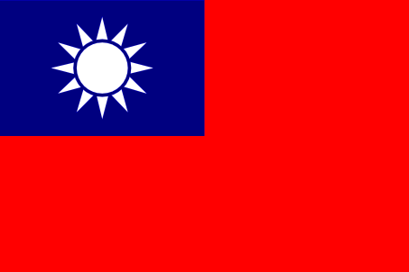

早上天氣還不錯，慢跑的很舒服～
太久沒有赤腳跑步，腳底板跟腳趾頭都有點痛，反正跑個幾天習慣了就好了。
要是腳底的皮跟我的臉皮一樣厚的話，那赤腳跑步算得了什麼哩～
趁著好天氣出門，雨傘也沒帶，今天的目標是申辦俄羅斯簽證，而且一天就要拿到手！
俄羅斯簽證，出了名的難申請，又是邀請函、又是旅館訂房證明（VOUCHER）、又是機票正本，還有保險證明...。
有些怎麼也弄不到，旅館訂房很機車，要確實訂幾天才能在俄羅斯待幾天，我哪有這個工夫和金錢訂30天的旅館？
（這可不是和去法國那次一樣，旅館可以訂好玩的，訂了就要真的去住，不然會被取消簽證）
機票也是很機車，我又不是搭飛機進入俄羅斯，叫我去哪裡生機票出來？
看來今天會比較辛苦一點才能拿到簽證。
旅行平安保險，多虧ING安泰人壽熊彩英小姐的幫忙，她跟我媽媽是好朋友，很久以前就認識到現在了。
昨天，星期一下午兩點我才急忙和她聯繫旅行平安保險的事情。
當天她就幫我弄好2000萬的保險，包含國外醫療以及國外緊急救助的部份，從4月22日開始連續保險180天。
而且隔天早上九點就可以提供我英文的保險證明，讓我去辦俄羅斯簽證，超級有效率，ING有妳真是他們的福氣。
騎著單車到信義路五段，昨天才來過一次，今天換個地方繼續辦簽證。
『莫斯科台北經濟文化協調委會駐台北代表處』，名字很長，簡稱莫北協。
一進去就看到明泰旅行社的辦30人團體簽證被打槍，也沒多專業麻～還好沒叫你們幫我辦（冷笑）
櫃台是一個很帥的俄國男生，很帥氣的說，女生想看帥哥無聊可以到這邊來欣賞一下，星期二、四才有開放。
因為他一開始就一直跟旅行社的人講英文，旅行社的人也跟他講英文，我想說對方大概不會講中文吧 @@"
將我所有能提供的文件都透過小抽屜傳給他，準備換我自己被打槍的心理準備 >"<
他看了看我的資料，然後跟主管討論一下（大概是因為外交部的文件吧）
接著用中文問我，『你什麼時候要拿簽證？』，這是表示一定會過的意思嗎？（大驚）
用手指頭比了一下地板，表示如果可以的話，我現在就想拿到。
個人簽證、單次進出，停留30天，急件辦理，下午三點來領，費用4120元。
雖然沒有算我比較便宜，但是沒有給我打槍我就很開心了 *^^*（啦～啦～啦～～）
領過帥哥辦事員（不知道名字，編號是9056）寫的繳費單（原來他不只會說中文，也會寫中文，真是了得）
然後走過馬路去信義路上的華南銀行繳錢，再走回莫北協把繳款單給他。
然後就等著下午三點拿簽證啦！
哇哈哈～沒看過俄羅斯的簽證吧？我自己也沒看過，原來上面沒有照片。
這次旅行，需要六張簽證，我簡單的分成三個類型：
沒有難度的簽證：台胞證，歐盟申根簽證
中等難度的簽證：俄羅斯簽證、波蘭簽證
機車難度的簽證：哈薩克簽證、烏克蘭簽證
中等難度的簽證，花了兩天就拿到了，台胞證跟歐盟簽證因為都有三個月和六個月的效期，
提早辦只是提早過期而已，所以四月再申請即可。
機車難度的簽證，兩國的邀請函我都已經到手，之所以麻煩，是因為在台灣沒有對等的機構可以申請。
烏克蘭要寄去日本辦理，哈薩克要寄到香港辦理，郵寄部份就透過FedEx，希望也可以很順利的到手。
（我打了三次國際電話到日本去問簽證的事情，都遇到同一個很不會講英文的日本人，恩恩阿阿半天也講不出話，浪費我的電話錢 T_T）
Alice和Ming，去年在中國地區騎腳踏車旅行，從海南-廣西-貴州-雲南-西藏-新疆，
一共騎了199天，超過9000公里，這是他們的網站，『Our Adventure,Our Life』 。

看到這熟悉的iWeb排版，想必他們也是Mac的使用者吧 :D
網站中有很精彩的199天單車旅行遊記可以看！喜歡旅行的人一定別錯過這樣的好料～絕佳的夢想補充劑。
Alice知道我要騎這一趟腳踏車，依照我會騎經過的路線，掃描了中國地區紙本地圖，讓我規劃路線。
一共掃了二十張，從北京一路到烏魯木齊通通都有了！而且非常的清楚。
就以烏魯木齊的周邊地圖來看好了，連路名和小鎮的名字都標示出來了～ :D
Alice＆Ming，謝謝你們，還剩下26天，就要換我去見見世面了 :D
在美國唸書的DoDo，請她的烏克蘭朋友Alona幫我錄了15句我自己以為實用的句子的發音～
聽起來都很酷說！像是這一句『肚子餓～/_\』
仔細聽～發音分三段喔，依序是法文，俄文，烏克蘭文。
打算學這15句然後上路 ^^" 其他還有哈薩克語，維語，德語，荷語跟波蘭語需要惡補一下。 ~_~（昏）
許久沒有更新行前準備的內容，但是並不代表事情都沒有在動，
相反的，一切都很順利的進行當中，不論是單車、裝備的取得，疫苗的注射或是簽證辦理都很順利。
依約，今天我要很感謝一個人。
早上，騎著單車去台北辦理波蘭簽證。這段路其實不會很遠，只是早上從慢跑開始就在下雨，有點討厭 ~_~
撐著雨傘騎著車，往信義路五段的的方向移動，到華沙貿易辦事處，自己跑簽證。
關於簽證，不知道是明泰旅行社能力不足，還是我的情況比較特殊，他們給我的感覺就是不想＆不願意幫我辦理。
沒關係，我最喜歡自己跑這些文件跟蒐集印章，又不是多困難的事情，何必假他人之手。
辦事處的小姐，她是一個很有禮貌的好人，今天的簽證，托她幫的忙，用超級特快簽的方式幫我拿到手。
有多快？一般件要等三天，急件則是早上送下午取件，我則花了30分鐘就拿到簽證了 T_T
而且沒有跟我收取急件的費用，還有謝謝華沙辦事處的主管，謝謝你答應將我的簽證費用打75折 m(_ _)m
簽證辦理能夠這麼順利，幕後最需要感謝的，就是台灣外交部，
外交部為了BTP這個活動，發一份相關的文件，希望各國的領事單位能儘可能提供方便。
而今天實際跑簽證的結果，發現真的很實用！
另外，關於疫苗的部份，在台灣有許多的旅行者也會參加B2P的活動。
依目前的情況看來，參加人數應該會陸陸續續的飆升 = ="
只想提醒想參加活動的人，疫苗一定要記得注射，因為狂犬病的致死率是100%。，Ting在國外也注射好疫苗了
疫苗的資訊和施打的需求，請向台灣的衛生署疾病管制局（CDC）詢問，我想它們會樂意協助。
很嚴肅的提醒想參加B2P的人，這不是開玩笑的！
透過基金會和聯合報的引薦之下，我終於和心目中的神，騎單車環遊世界的勇者-胡榮華見面了！
當我四歲還在流鼻涕的時候，胡大哥已經騎著單車展開三年一個月，總里程達四萬多公里的世界旅行。
從胡榮華大哥那邊得到所多寶貴的意見和教導，本來規劃120天的行程，怕太趕而造成壓力，
也為了讓行程可以輕鬆一些，多考量可能發生的情況，並降低單日騎乘的距離，
所以旅行的天數從120天放寬為180天，而裝備的部份也更加的提升水準，以因應多變嚴苛的氣候和路況。
我知道我能夠完成這一趟一萬五千公里的單車旅行，毫不存疑。
但當我抵達終點的那一天，這一切並非因為我多厲害或是多偉大，
要感謝的人太多了，多少人辛苦的幫我準備這個活動，只希望我能順利出發，
又有更多的人每天默默的祈禱，又提心弔膽的入眠，只希望我能平安回來。
相較之下，我的部份，實在是微乎其微的不足道。
胡大哥開釋了很多做人處事的道理，有很多我還沒辦法了解它的含意，
但是當我騎出去，第50天、第100天、流過汗、滴過淚、開口笑的時候，我都會想起這些話的意義。
謝謝你們大家，為了我這一個傻小子，日夜的忙碌，我也會好好努力的！
今天，我想放一面國旗在我的網頁上。

我生長在這塊土地，我熱愛這塊土地，我不會捨棄身為台灣人對於自己的認同和驕傲！
也許我不能一路上搖擺的掛著國旗騎單車，但是我會將它好好的收藏在我的行李中，陪我一起長征到巴黎。
謝謝多家電視台、報社、廣播電台給予正面的報導，
讓大家能更重視地球暖化的問題，以及台灣身為地球村的一份子，該怎麼樣盡一份心力？
很抱歉這陣子我必須躲著各位，給你們帶來採訪上的困擾，待行程準備的較完善，基金會將邀請大家一起分享這個活動的精彩！
謝謝各位的諒解。